Trường ĐH Công nghệ – Đại học Quốc gia Hà Nội
Bao gồm cả các kỹ thuật dọn rác (garbage collection) để tự động thu hồi bộ nhớ trên heap (không nói kỹ trong chương này).
Không đáp ứng khi ngôn ngữ hỗ trợ đệ quy (recursion).
Trong đệ quy:
int fib (int n) {
if (n == 0) return 1;
else if (n == 1) return 1;
else return fib(n-1) + fib(n-2);
}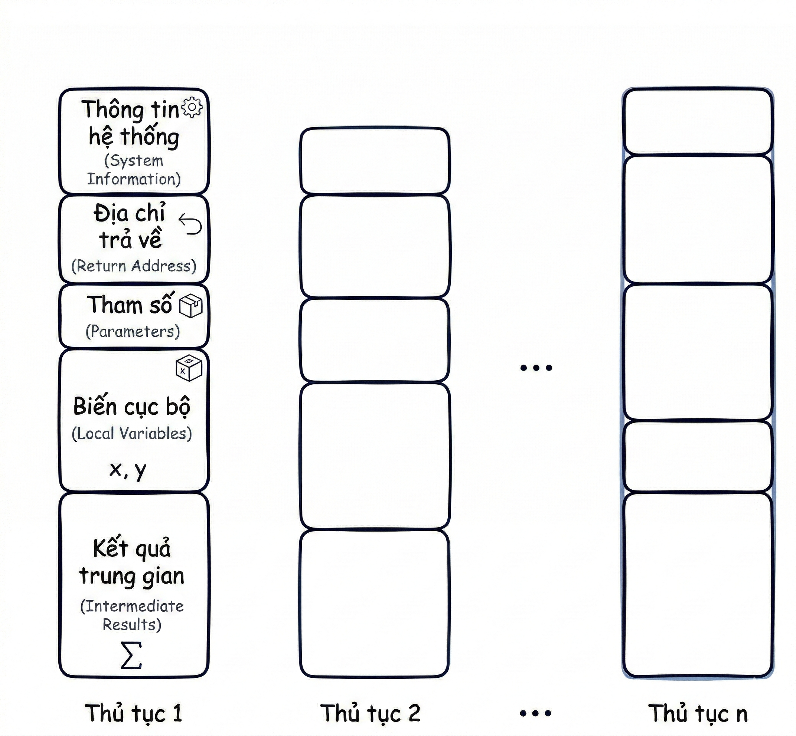
A: {
int a = 1;
int b = 0;
B: {
int c = 3;
int b = 3; // b này che khuất b bên ngoài
}
b = a + 1; // Sử dụng b của khối A
}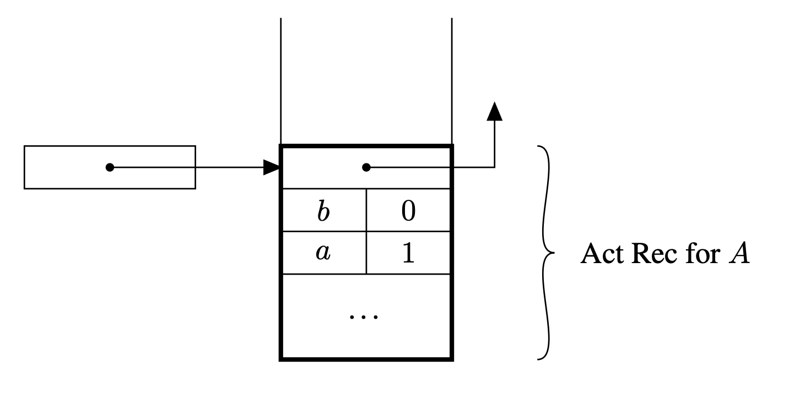
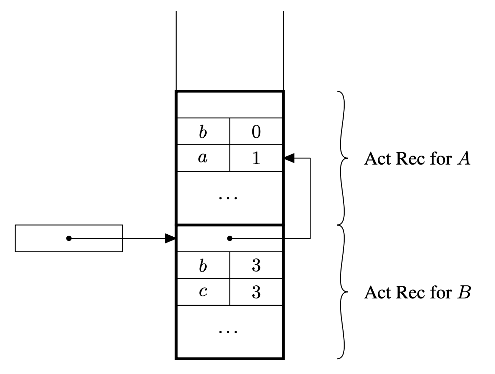
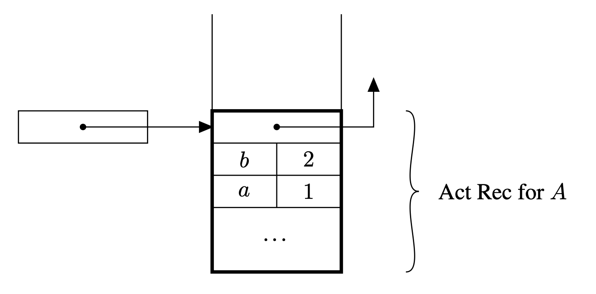
⭐️ Chuỗi động là tập hợp các liên kết giúp quản lý các bản ghi có kích thước khác nhau trên ngăn xếp.
{
int a = 3;
int b = (a + x) / (x + y);
}Phức tạp hơn khối nội tuyến do cần thêm thông tin điều khiển luồng.
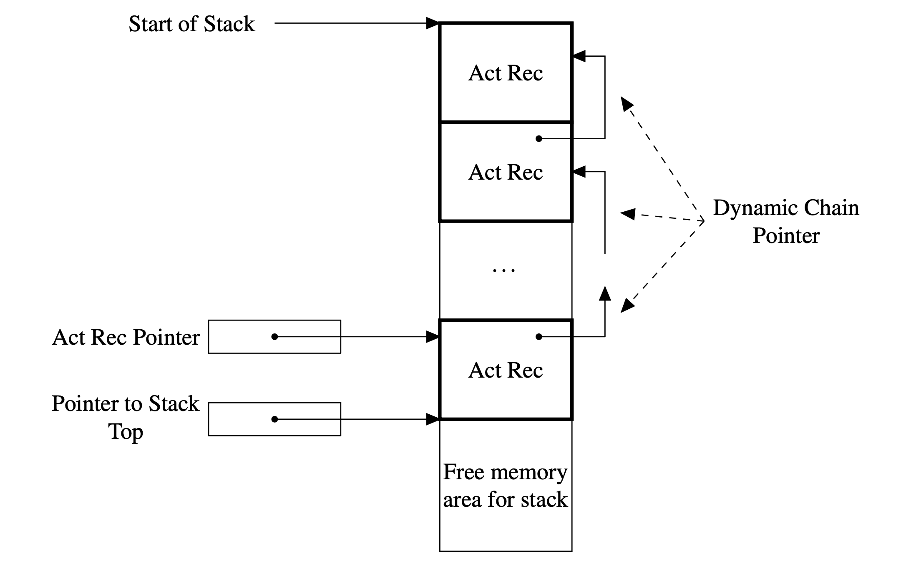
⭐️ Trình biên dịch thường ưu tiên đưa nhiều việc cho hàm được gọi để giảm kích thước mã nguồn (mã chỉ xuất hiện 1 lần thay vì nhiều lần ở các điểm gọi).
| Giai đoạn | Các thao tác chính |
|---|---|
| Khi gọi (Prologue) | Thay đổi PC, cấp phát không gian stack, lưu con trỏ cũ vào chuỗi động, truyền tham số, lưu giá trị thanh ghi. |
| Khi kết thúc (Epilogue) | Trả kết quả về caller, khôi phục các thanh ghi, giải phóng không gian stack (thu hồi bản ghi), cập nhật PC. |
int *p, *q;
p = malloc(sizeof(int)); // Cấp phát p
q = malloc(sizeof(int)); // Cấp phát q
// ... sử dụng p, q ...
free(p); // Thu hồi p trước q -> Vi phạm LIFO
free(q);⭐️ Để quản lý việc cấp phát/thu hồi tự do này, ta cần một vùng nhớ gọi là Heap.
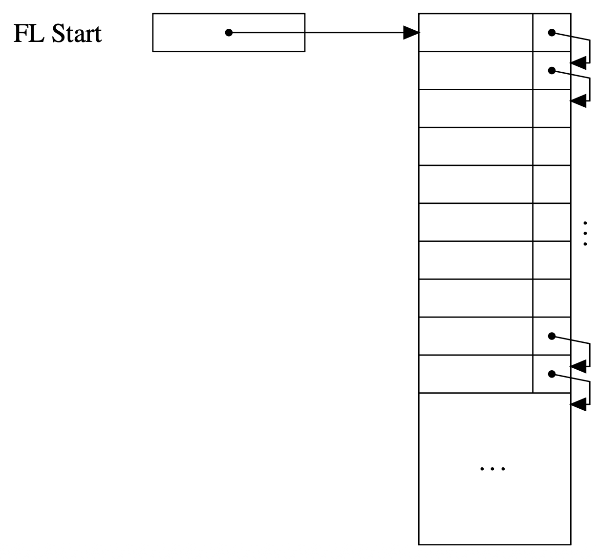
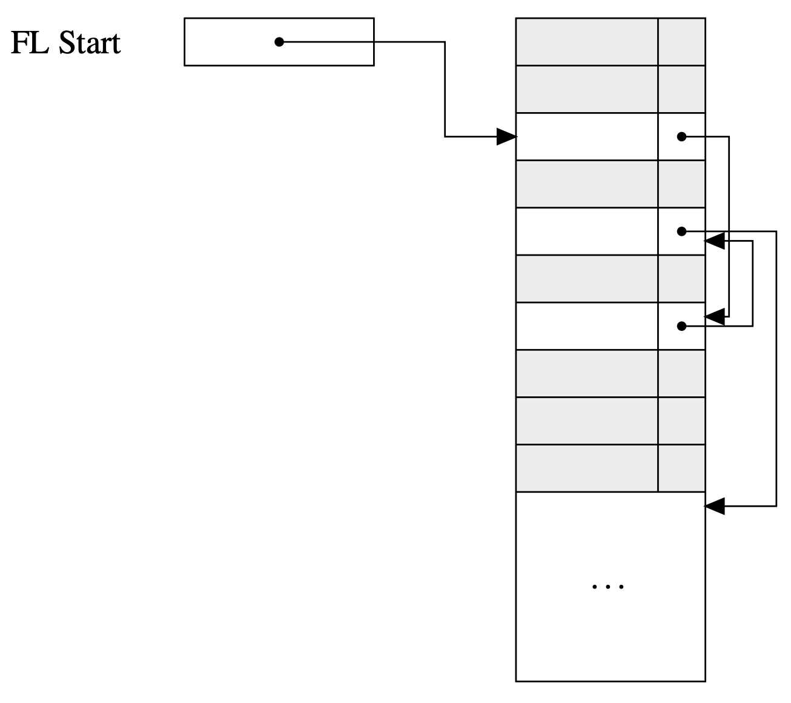
Vấn đề lớn nhất: phân mảnh (fragmentation).
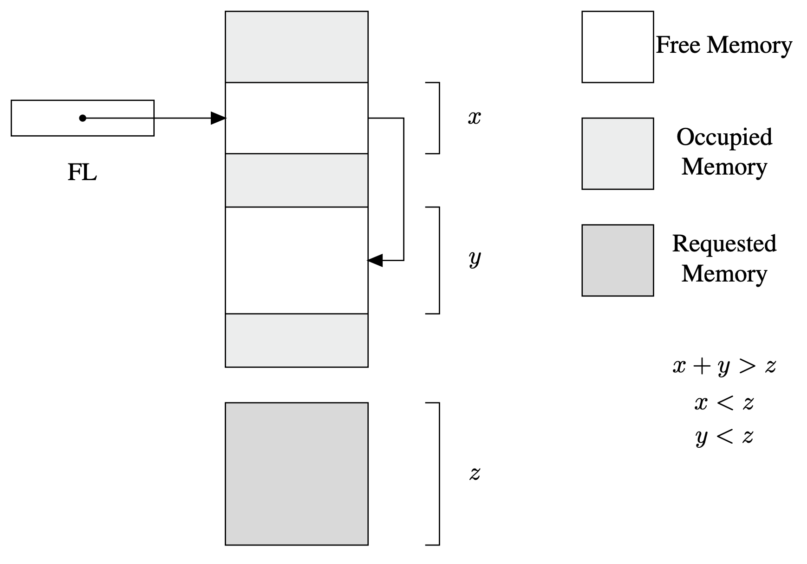
A: {
int y = 0;
B: {
int x = 0;
void fie(int n) {
x = n + 1; // x thuộc khối B
y = n + 2; // y thuộc khối A
}
C: {
int x = 1;
fie(2);
write(x);
}
}
write(y);
}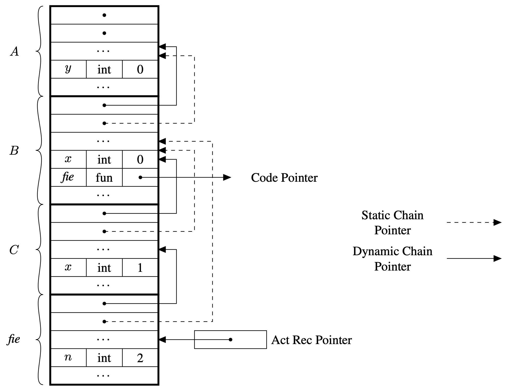
Hàm gọi tính toán con trỏ chuỗi tĩnh và chuyển cho hàm được gọi khi bắt đầu lời gọi.
⭐️ Giá trị \(k\) được trình biên dịch xác định tĩnh dựa trên cấu trúc chương trình.
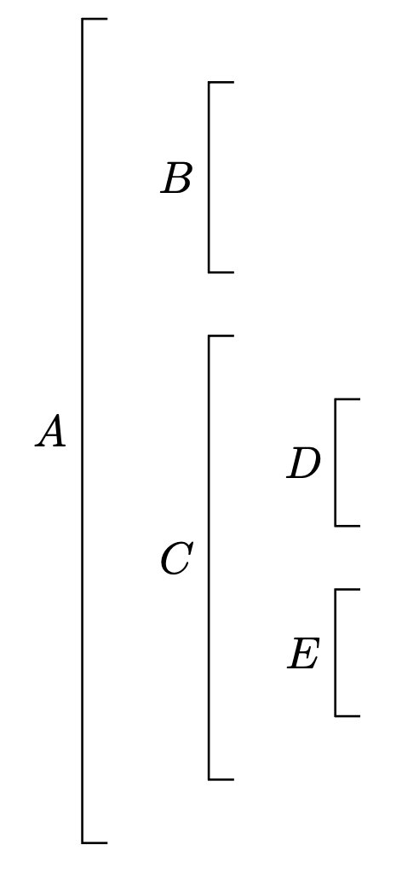
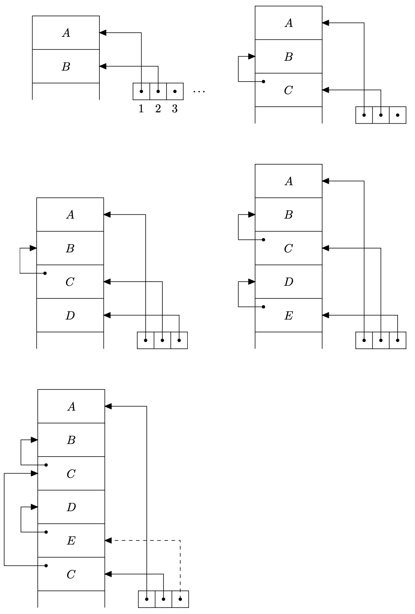
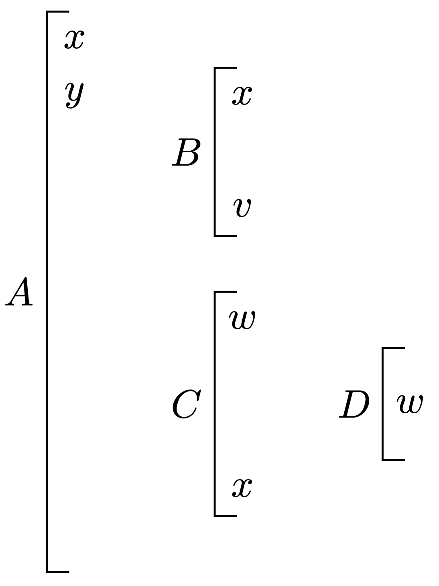
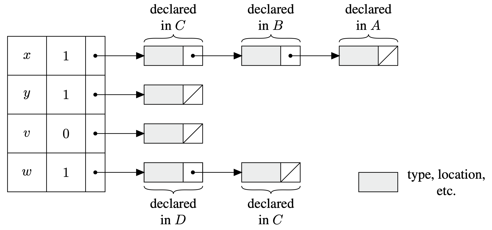
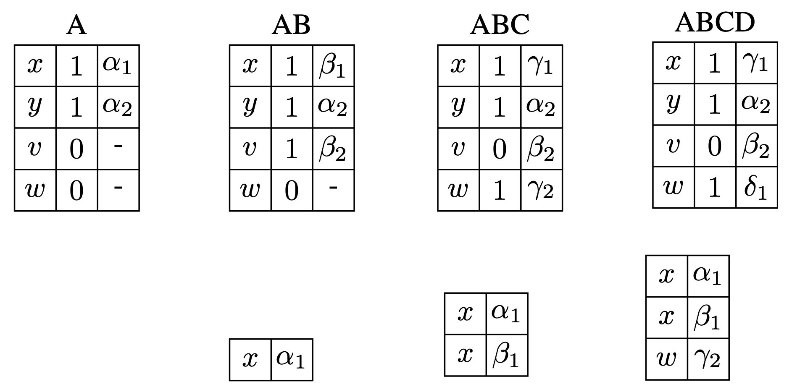